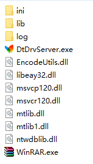
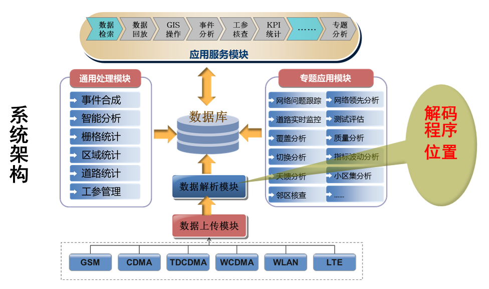
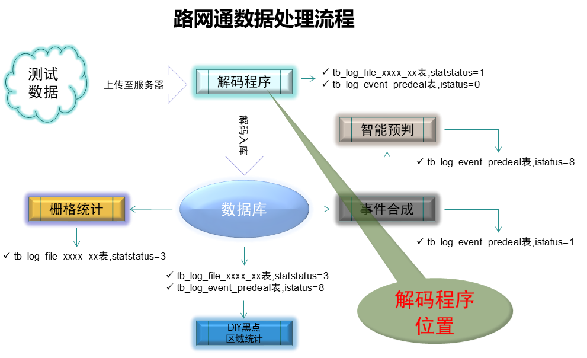
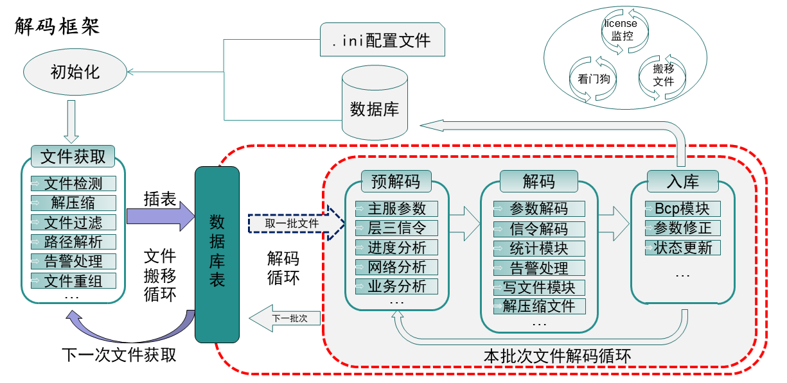
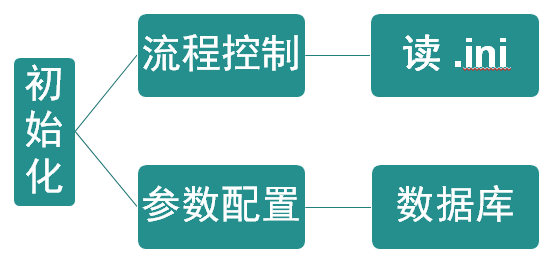
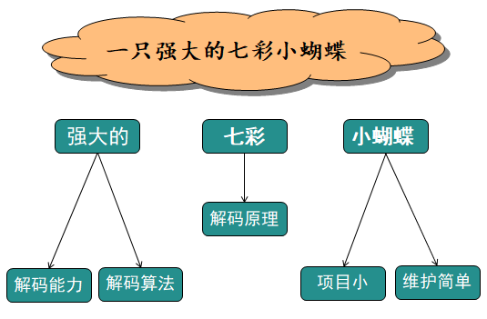

一、解码程序的简介
-
图标和名称
DtDrvServer.exe
-
角色：路网通的眼睛
-
作用：翻译官
市面上不同格式、不同厂家的数据，通过解码程序解析入库，可以形成格式统一的，便于路网通其它后台使用的数据。
-
解码能力
类型 说明 运营商 中国移动、中国联通、中国电信 网络制式 GSM、CDMA、WCDMA、LTE、NB-IOT、NR(NSA\SA) 业务类型 语音业务、数据业务、空闲业务、扫频测试 设备厂家 鼎利、中兴、新科思创、华为、诺优、ATU、CDS、烽火、TEMS 文件类型 rcu\source_rcu、aptx\apt、log\low\lte、csv、cu\dgz、raf\l5g 手机芯片 高通(2G\3G\4G) 海思(2G\3G\4G\5G) -
解码程序获取路径
https://svn.mastercom.cn:4438/svn/RepositoriesRAMS/trunk/DataPlatform/AAA路网通版本发布/0_后台基本模块/DtDrvServer（解析程序）/00基础版本/2008数据库
-
目录结构
文件名 作用 ini 文件夹 存放解码程序的配置文件 lib 文件夹 存放wireshark库、第三方库 log 文件夹 存放解码过程中生成的日志文件 DtDrvServer.exe 解码程序执行文件 EncodeUtils.dll DES编码和解码需要依赖的动态库 mtlib.dll/mtlib1.dll 调用wireshark库的中间层dll WinRAR.exe 解压和压缩文件时需要调用的程序
二、解码程序的功能
-
系统架构位置
 -
路网通数据处理流程
 -
思 考
各厂家
测试生成的数据文件
格式不统一数据量相对较大
测试业务种类繁多?思考?
参数涉及繁杂
参数获取方法多变如何保证
效率、可扩展性
等等 -
由问题得出功能
可以将各厂家的数据解析为统一的格式
具有对数据进行预处理的能力
可实现参数的特殊算法处理
具有处理大量数据的能力，且可扩展
-
说明
解码程序要能解析各种厂家、各种格式的数据，并且能生成统一的路网通数据结构输出，即不管什么测试数据，只要经过解码程序，输出的都是一种格式，且可被路网通的其它后台识别。
在解码过程中，可以识别文件的有效性，可以按网络制式、日期等维度对文件进行归类，可以将文件和文件信息进行绑定，例如时间、轨迹、业务类型等信息，可以对文件信息参数进行累计，回填、剔除、抽样、修正等处理
特殊算法主要指速率、RTP包、采样、修正规则等
可多线程、多进程处理，可通过硬解码直接解析数据文件，可以轻松扩展模块，比如：手机型号、网络制式、芯片解码器、文件类型等
三、解码程序的原理
-
解码框架
 -
初始化
解码程序的初始化分两部分：流程控制、参数配置。
*流程控制 ---->
配置节点 节点名称 说明 [COMMON] 主要存放路径配置项，ftp、work、save、stat [DBSETTING] 主库配置信息 [DEAL] 流程控制快关，Gen2Csv 、Log2Fmt 、StatSample [REENTRY] 文件防重入开关 [SHUNTBOX] 解码分流配置
*参数配置 ---->
读取数据库信息，根据读取的参数信息，来解析和匹配数据
配置表 表名 记录内容 tb_cfg_static_dbsetting 记录了各个地市库数据的链接信息 tb_cfg_licence 记录了软件使用有效期限 tb_cfg_dirparser_dir 记录了路径文件夹的层级和ID tb_cfg_dirparser_file 记录了文件类型和对应的ID tb_cfg_dirparser_file_part 记录了文件解析模版信息 tb_cfg_dirparser_part 记录了文件解析位置信息 tb_cfg_static_arealist 记录了区域类型和区域ID tb_cfg_dirparser_path 记录了以上表的关联性 -
文件读取
对数据文件进行解压、过滤、分发、路径解析、文件重组、文件ID计算、数据分流、清理和更新数据库表等操作。
配置表 操作 说明 解压 对rar、zip文件进行解压缩；对厂家自定义压缩算法进行解压 过滤 对非法文件、无效文件，正在占用的文件、中间文件等过滤 分发 对需要转换的文件进行对应路径分发 路径解析 根据路径解析配置表，给文件绑定相应的属性 文件重组 对分割成多个文件上传的，要进行组合拼接为一个文件 File ID计算 根据规则计算文件ID 数据分流 解码分流 清理数据库表 对过时的，tb_adapter_file_list表数据进行清理 更新数据库表 将读取的符合条件的文件信息记录到tb_adapter_file_list中 -
预解码
- 主要解析两个参数：网络类型、业务类型。
- 其次：运营商、双工模式、定制化识别。
说明：
由于网络制式有很多，2G/3G/4G/5G每种制式的参数都不一样、每个制式都有自己存放数据的数据库表。在解码程序中，输出数据的模式采用了简单工厂模式，不同的网络制式会激活不同的网络输出类用于正式解码。
业务类型是一个比较重要的参数，但是此参数并不需要解析整个文件来确定，一般都是解析几条对应的信令就可知道是什么测试，所以放在试解码中。
运营商是文件分类的一个重要参数，在试解码中根据频点和移动网络编码PLMN来确定
-
解码
解析：主服、邻区、信令、事件、应用层、层1/2参数等。所有参数都在这一个环节被解析出来。
详细说明 操作名 说明 参数解码 根据现有的高通协议、海思协议、以及分析出的其它厂家数据格式，来解析参数并存储到定制好的结构体中。 信令解码 调用Wireshark库进行层三信令的解析，并存储到数据结构中。 统计模块 对部分数据进行小粒度统计输出：比如：RTP信令参数，速率、里程、时长。 读写文件 数据作为采样点，被写入到BCP文件中和sam文件中，为后面的入库和统计做准备。 压缩文件 解码后的文件要压缩后搬到save目录中去。 告警处理 对于解码异常的情况输出信息到表或日志文件中。 -
入库
将解码生成的回放采样点参数、统计采样点参数、信令参数、以及文件信息等等，做入库处理，并更新状态值，以激活其它后台处理。
说明：
- 主要有两类数据需要入库：回放采样点、信令。
- 其次统计采样点数据由于数据量相对较大，以文件的形式存放到统计目录下，只将文件的名称和绝对目录存入表中。
- 特例，扫频数据所有数据都是存放到库中的
- 除此之外，还会做业务类型、运营商的修正等
-
其它线程
Gen文件搬移线程
由与华为的Gen文件无法直接解码，需要通过华为软件转换后，才能解码。Tems文件搬移线程
Tems的文件，我们也无法直接解码，需要使用TEMS软件转换后，才能解析。License监控线程
由于湖北路网通无合同维护事件推动开发的，用于检测软件许可证的线程。喂狗线程
用来给配合看门狗程序工作的线程。
四、解码程序的维护
-
部署问题
重要提醒：解码程序的部署路径必须是全英文; 数据库版本：SqlServer2008
当部署完软件后，无法启动时，一般会有提示，根据提示检查：
系统提示不支持的情况：
一般是没有安装C++ 2015和2017运行时库还是无法启动的:
主要检查软件目录下的文件是否有遗漏
数据库是否可以连接成功
检查ini配置文件中的数据库配置信息。
然后要看部署的服务器有没有安装数据库驱动。
最后别名的设置是否正确。
如果提示License的问题，第一步查看tb_cfg_licence表是否存在，然后就是有关数据库的链接是不是通的
-
维护类问题
我们需要了解的一些常识。
解码流程都会操作更新到哪些表？
-
tb_adapter_file_list
解码开始阶段，从解码起始路径，符合条件的文件信息，会被插入这张表。且文件对应的状态码为4(路径解析成功)，解码后会将状态码修改为1(解码成功)。
重要字段：iexeid, istatstatus, strlogtable, strdesc -
tb_log_file_xxxx_xx(文件信息表)
这个表在解码完成后生成。分两步，第一步清理已有的相同文件的信息；第二步，更新文件信息；第三步，更新文件状态和描述。
重要字段: ifileid, strfilename, strmsgtbname, strsampletbname, strsampletbname2, iservicetype, icarriertype, istatstatus -
tb_log_event_predeal
解码后会将文件对应的测试类型、项目类型、以及关联的表名放入其中、并将状态改为0。
重要字段: ifileid，istatus -
tb_dtnr_tdd_sample_200401: 解码后，将生成的回放采样点信息填在这里。
-
tb_dtnr_tdd_msg_200401: 解码后，将层三信令填在这个表里。
-
tb_log_file_time: 在生成log_file表的时候，将log_file表的信息填入其中。
-
RTP 信令表: 存储的是VOLTE RTP信令。
-
-
总结
